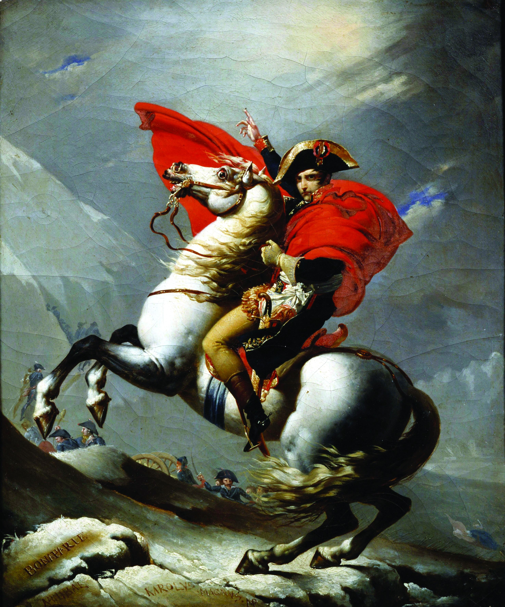

Napoleon Bonaparte (born Napoleone di Buonaparte; 15 August 1769 – 5
May 1821) was a French military and political leader who rose to
prominence during the French Revolution and led several successful
campaigns during the Revolutionary Wars. He was the de facto leader of
the French Republic as First Consul from 1799 to 1804. As Napoleon I,
he was Emperor of the French from 1804 until 1814 and again in 1815.
Napoleon dominated European and global affairs for more than a decade
while leading France against a series of coalitions in the Napoleonic
Wars. He won most of these wars and the vast majority of his battles,
building a large empire that ruled over continental Europe before its
final collapse in 1815. He was one of the greatest military commanders
in history, and his wars and campaigns are studied in military schools
worldwide. Napoleon's political and cultural legacy has endured, and
he has been one of the most celebrated and controversial leaders in
world history.

The most well-known Napoleon portrait
The following list is a time line of Napoleon Bonaparte
1769- Napoleon born in Corsica
1785- Napoleon joins the French military, becoming an artillery
officer.
1787–95- The French Revolution begins, and Napoleon sides with
the revolutionaries. in 1793 is promoted to brigadier general. In 1795
a new constitution in France places executive power in a five-member
Directory. Napoleon becomes a respected adviser on military matters to
the Directory.
1796–99- Napoleon marries Joséphine Tascher de La Pagerie, the
widow of General Alexandre de Beauharnais, in March 1796. He
subsequently leads French forces to a series of victories against the
Austrians in northern Italy. He negotiates the Treaty of Campo Formio
in 1797. He attempts to conquer Egypt (1798–99) but is defeated by the
British under Horatio Nelson in the Battle of the Nile. Unrest at home
leads Napoleon to return to France.
1799- Napoleon joins a plot that overthrows the Directory on
November 9–10 (18–19 Brumaire in the French republican calendar). This
event is often considered the effective end of the French Revolution.
A new government, the Consulate, is established, and Napoleon is made
first consul, or leader of France.
1800- A victory over Austria at the Battle of Marengo leaves
France the dominant power on the continent.
1803- In need of money, Napoleon sells the Louisiana Territory
to the United States, abandoning the idea of a French empire in North
America.
1804- Napoleon’s numerous reforms in government include the
Napoleonic Code, the French civil code enacted on March 21 that
clarifies and makes uniform the laws of France. He also reconstructs
the French education system. Napoleon declares France a hereditary
empire and crowns himself emperor under the name Napoleon I.
1805–09- At the Battle of Trafalgar on October 21, 1805, the
British fleet under Nelson destroys the French navy. From this point
on Napoleon will focus on land battles. He wins major victories in the
Battles of Ulm and Austerlitz (1805), Jena and Auerstädt (1806), and
Friedland (1807) against an alliance of Russia, Austria, Sweden, and
Prussia. The battles are part of what come to be known as the
Napoleonic Wars. The resulting Treaties of Tilsit (1807) and the
Treaty of Schönbrunn (1809) leave most of Europe, from the English
Channel to the Russian border, either part of the French Empire,
controlled by France, or allied to it by treaty.
1809–11- After divorcing Joséphine (who did not have any
children with Napoleon) in 1809, Napoleon marries Marie-Louise,
daughter of the emperor of Austria, in 1810. On March 20, 1811,
Marie-Louise bears him a son, the future duke von Reichstadt.
1812- Tsar Alexander I of Russia refuses to abide by Napoleon’s
policy forbidding trade with Britain. Napoleon begins an ill-fated
invasion of Russia. He reaches Moscow in September but finds the city
abandoned. A huge fire breaks out that same day, destroying the
greater part of the town. Since it is impossible to winter in the
ruined city, Napoleon begins a retreat in October across the
snow-covered plains. The retreat from Moscow is one of the great
disasters of military history. Of the some 600,000 troops who had set
out with Napoleon’s Grand Army in June, fewer than 10,000 men fit for
combat remained with his main force by November.
1813–14- The Battle of Leipzig (October 1813) results in the
destruction of what is left of French power in Germany and Poland.
Napoleon is forced to withdraw west of the Rhine River. Allied forces
invade France, capturing Paris on March 30, 1814. Napoleon is forced
to abdicate on April 6 and is forced into exile on the island of Elba,
off the west coast of Italy.
1815- Napoleon manages to muster a force and returns to France
to reestablish himself as emperor for the Hundred Days, but he is
decisively defeated at the Battle of Waterloo on June 18. Four days
later, Napoleon abdicates for the last time. He is exiled again, this
time to Saint Helena, an island in the South Atlantic Ocean.